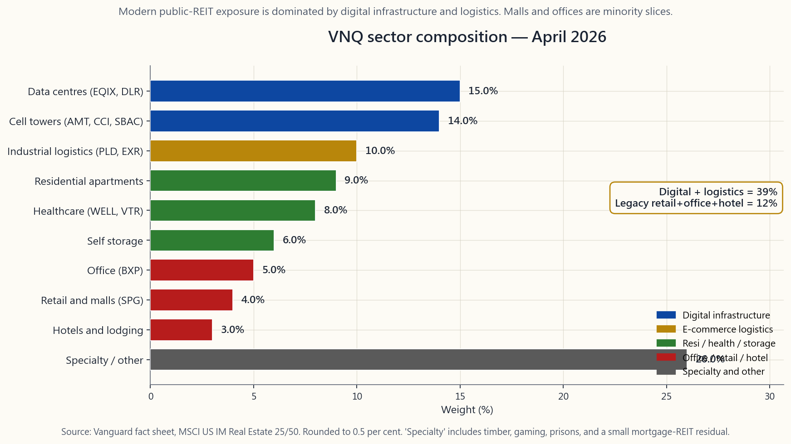
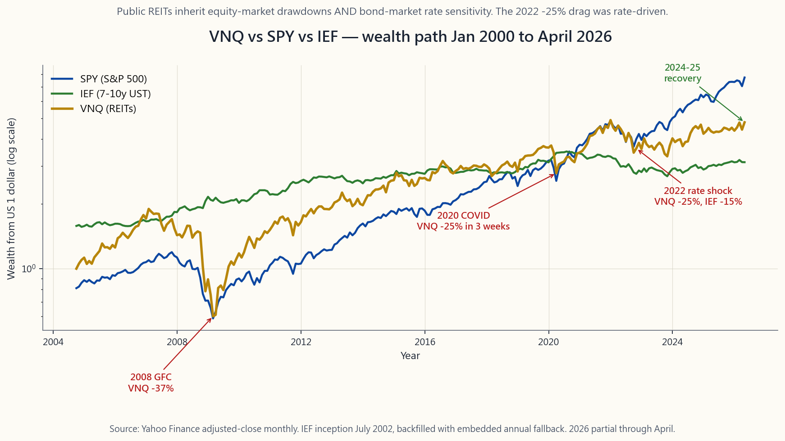

Side Lesson 07: REITs — Real Estate as an Investable Asset Class
1. Why This Is Important
Most retail investors believe two things about real estate that are half-true and dangerous when combined. The first is that "real estate is an inflation hedge." The second is that "REITs let you own real estate without becoming a landlord." Both statements are partly true, both are repeated everywhere, and the gap between the partial truth and the lived behaviour of public REITs is exactly where new investors lose money in 2022-style rate shocks.
Three reasons this side slot is worth its own lesson:
is a basket of 160-odd publicly traded equities that happen to own buildings. Its daily price tracks the SP500 with a beta around 0.85, not the Case-Shiller home-price index. When the stock market panics, VNQ panics. When rates spike, VNQ takes a duration hit because its distributions are valued like long-bond coupons. The 2022 episode is the canonical example: VNQ fell about 25 per cent in a year when private commercial real estate was roughly flat. The asset wrapper matters.
is a pass-through entity that must distribute at least 90 per cent of taxable income to shareholders to avoid corporate tax. In return, investors receive distributions taxed at ordinary income rates, not the qualified-dividend rate. Section 199A (the 2017 TCJA provision, made permanent in 2025) lets investors deduct 20 per cent of REIT distributions, which lifts after-tax yield meaningfully but only inside a taxable account. The location-not-allocation rule reads the same way it does for everything else: REITs belong in the IRA whenever you have the room.
modern VNQ is roughly 15 per cent data centres, 14 per cent cell towers, 10 per cent industrial logistics, and only single-digit weights in shopping malls and office buildings. The 2010 VNQ was the inverse. The "REITs = malls + offices + apartments" mental model that most retail investors carry is fifteen years out of date. What you actually own when you buy VNQ today is digital infrastructure with a side of warehouse roofs.
The goal of this side lesson is to make the wrapper, the tax, the rate sensitivity, and the sector mix legible enough that you can decide whether REITs deserve a slot in your portfolio at all — and if they do, in which sleeve and which account.

2. What You Need to Know
2.1 The REIT Wrapper — Distribute 90 Per Cent, Pay No Corporate Tax
A real estate investment trust is a corporate-form entity that elects to be taxed under Sections 856-859 of the Internal Revenue Code. To qualify, it must satisfy four ongoing tests. Asset test: at least 75 per cent of total assets in real estate, cash, or US Treasuries. Income test: at least 75 per cent of gross income from rents, interest on mortgages on real property, or gains from real property. Distribution test: at least 90 per cent of taxable income paid out to shareholders annually as dividends. Ownership test: at least 100 shareholders, with no five investors owning more than 50 per cent.
If those conditions are met, the REIT pays no federal corporate income tax. The trade-off is that shareholders receive ordinary-income distributions rather than qualified dividends taxed at the lower capital-gains rate. Section 199A then lets a non-corporate taxpayer deduct 20 per cent of those REIT distributions, which effectively brings the top federal rate on the bulk of REIT income from 37 per cent down to 29.6 per cent. State tax stacks on top.
The mechanical implication for an investor: REITs deliver a higher pre-tax yield than a normal stock, because the corporate tax layer that suppresses ordinary equity dividend yields has been removed. They deliver a lower after-tax yield in a taxable account than the headline suggests, because the investor pays the corporate-equivalent rate personally. The location rule says: hold REITs in an IRA where the ordinary-income drag disappears, or in the taxable account only when you have explicitly priced the after-tax yield against alternatives.
The 90-per-cent distribution mandate is also why REITs cannot retain earnings to fund growth. They must issue equity and debt every year to acquire new properties. That structural feature is why REIT balance sheets look more like utilities than like ordinary equities — and why they are unusually rate-sensitive, the topic of §2.3.
2.2 Equity vs Mortgage, Broad vs Sector — Knowing What You Own
The first split is equity REITs versus mortgage REITs. Equity REITs (the bulk of the universe, around 90 per cent of market cap) own buildings and collect rent. Mortgage REITs (mREITs — AGNC, NLY, ABR) own mortgage securities and earn the spread between long-rate yields and short-rate funding. Mortgage REITs are not real estate in any meaningful sense; they are levered fixed-income carry trades wearing a real-estate label. They blew up in 1998, 2008, and 2020. Their double-digit yields are payment for the volatility, not free money. For most investors the right exposure is equity REITs only, which is what VNQ, SCHH, USRT, and IYR all track.
The second split is broad versus sector. The four broad US-equity-REIT ETFs (April 2026 fees in parentheses):
- VNQ (0.13%) — Vanguard's flagship, MSCI US Investable Market Real
- SCHH (0.07%) — Schwab's competitor, Dow Jones US Select REIT
- USRT (0.08%) — iShares CoreUS REIT, FTSE NAREIT Equity REIT
- IYR (0.39%) — iShares Real Estate, broader (includes some real
Sector REITs have been the more interesting story since 2015. The modern public-REIT universe is dominated by four sectors that did not exist as REIT categories twenty years ago:
- Data centres (EQIX, DLR) — server farms leased to hyperscalers
- Cell towers (AMT, CCI, SBAC) — roughly 14 per cent of VNQ.
- Industrial logistics (PLD, EXR) — warehouses and self-storage,
- Healthcare (WELL, VTR) — senior living, medical offices, life-
What is not there in size any more: shopping malls (SPG and a shrinking peer set, perhaps 4 per cent of VNQ), office (BXP and a deeply discounted peer set, perhaps 5 per cent), and hotels (cyclical, small weight). The point is that buying VNQ today is mostly buying digital and logistics infrastructure with a small bond-proxy residential-and-healthcare ballast — not buying the 1995 mall index.
Sector ETFs let you over- or underweight: SRVR (data + tower), INDS (industrial), REZ (residential), VPN (data + connectivity). Most retail investors should default to VNQ; investors with a strong view on a sector trend can overlay 5-10 per cent of a single-sector ETF on top.
2.3 Rate Sensitivity — REITs Are Six- to Eight-Year Bonds in Disguise
The single fact that drives REIT price behaviour over months-to-years windows is that they trade like long-duration bonds. Empirical duration of VNQ has been roughly 6-8 over the post-2010 sample, which puts it between a 5-year and 10-year Treasury for interest-rate sensitivity. The mechanism is straightforward: a REIT distribution stream is a long sequence of cash payouts, the present value of which moves inversely with the discount rate. When 10-year Treasury yields rose 250 basis points in 2022, VNQ fell about 25 per cent (-25.0% total return for the year), which is roughly what a 7-year duration estimate predicted. That is the duration-implied response.
The 2022 episode is worth memorising as the canonical REIT rate-shock case. Headline US CPI hit 9.1 per cent in June 2022. The Fed funds rate went from 0.25 to 4.50 per cent in eleven months. The 10-year Treasury yield rose from 1.5 per cent to 4.0 per cent. Private commercial real estate transacted, in cap-rate terms, roughly flat — the buildings did not lose 25 per cent of their value in twelve months. But VNQ did. The public wrapper transmits rate sensitivity in real time; the private asset transmits it only at the next sale. The vol-tail-wags-the-dog framing applies: when there is a public quote on a long- duration cash-flow stream, the public quote will move on rates whether or not the underlying does.
The corollary that surprises most investors: REITs are not a clean inflation hedge in the spike phase, despite the textbook story. They are an inflation hedge over fifteen-plus-year windows because rents reset and replacement cost rises with the price level. Over twelve months, when CPI is rising and the Fed is reacting, REITs typically fall. Side Lesson 06 (inflation) covers the fuller asset-class ranking; the REIT-specific point is that the hedge story works on the operating side, not the pricing side, and the time gap between the two can run years.
The portfolio implication is that REITs deserve a small allocation (typically 5-10 per cent) in the income or stores-of-value sleeve, sized assuming they will move with stocks in equity drawdowns and with bonds in rate drawdowns — i.e. they will rarely diversify exactly when you need them to. The diversification benefit is real over decades; over single-quarter shocks, treat them as correlated with whichever risk asset is moving.

2.4 Where REITs Belong — Tranche, Account, and Sizing
Pull the threads together and the placement decision is mechanical.
Tranche. REITs are an income asset, not a stores-of-value asset. The distribution is the reason you own them; the underlying real estate is bond-collateral that supports the distribution. They go in the same sleeve as the dividend-equity menu (SCHD, VYM) covered in Side Lesson 10, not in the gold-and-commodities sleeve covered in Week 06. Sized at 5-10 per cent of the income sleeve for a default investor. Larger sizing only for investors who explicitly want to take a sector view (data centres, towers).
Account. IRA before taxable, full stop. REIT distributions are ordinary income, the 199A 20-per-cent deduction is nice but does not close the gap, and the asset throws off enough yield that the location decision compounds materially. The order is: max out the IRA REIT slot first; fill the taxable slot only after the IRA is full or if you specifically want the depreciation-shielded portion of the distribution as taxable cash flow.
Sizing (the barbell view). A 5-10 per cent VNQ position is a core-sleeve holding, not a barbell tail. It is not the asset that saves you in a regime change. The 2022 episode showed that REITs in public-wrapper form will not protect you against a rate shock and will not protect you against an equity drawdown either. They earn their slot on long-horizon income and modest diversification, not on crisis-alpha. If you find yourself sizing REITs above 15 per cent, you are making a bet on real estate as an asset class; that bet usually belongs in direct property ownership with a fixed-rate mortgage, not in public REITs.
The closing line that captures the wrapper trap: **public REITs let you own real estate the way an ETF lets you own stocks. The ETF inherits the volatility of the wrapper, not the patience of the underlying.** Size accordingly.
3. Common Misconceptions
Their daily price is set by equity markets and reacts to rates and risk-on/risk-off flows in real time. The Case-Shiller index moves at the speed of physical transactions, with months of delay. VNQ moves in seconds. They are not the same asset.
distributions are ordinary income. The 199A 20-per-cent deduction helps but does not bring them down to qualified-dividend rates. SCHD's 3.6 per cent qualified yield is meaningfully better after-tax than VNQ's 3.8 per cent ordinary-income yield in a high-bracket taxable account.
rents reset, replacement cost rises, leases roll. Over single-year windows during a rate spike, they fall hard. 2022 is the canonical counter-example.
different asset classes. mREITs are levered carry trades; equity REITs own buildings. mREITs blew up in 2020 and 2008 because their funding spreads collapsed; equity REITs did not.
towers, data centres, and industrial logistics. The 1995 mental model is fifteen years out of date.
rule."* The 90-per-cent rule applies to taxable income*, which the REIT itself can manage downward via depreciation. In a deep recession (2008, 2020) several large REITs cut distributions despite the legal floor.
Over decades, yes. Over months, no. The wrapper is the difference, and the wrapper is liquid, levered to equity beta, and re-priced tick by tick.
4. Q&A Section
Q: Should I own VNQ at all? A: For a default 60/40-style investor with at least a 10-year horizon and an IRA with room, yes — at 5-10 per cent of the equity sleeve. For a taxable-only investor in the top bracket, the after-tax yield case is weaker; many investors substitute a higher-yielding qualified- dividend ETF (SCHD) instead and skip REITs entirely.
Q: VNQ versus SCHH — which one? A: Functionally interchangeable for a buy-and-hold investor. SCHH is slightly cheaper (0.07% vs 0.13%) and excludes mortgage REITs by construction. VNQ has more AUM and tighter spreads. Either is fine. Pick the one that matches the rest of your fund family for share-class consistency.
**Q: Should I substitute O (Realty Income) or AMT (American Tower) for the ETF?** A: Single-name REIT exposure trades the diversification away. O is a fine company; it is also one ticker out of 160 in VNQ. If you want a thematic overlay (towers, data centres) the right vehicle is a sector ETF (SRVR, VPN), not a single name.
Q: How does the 2022 drawdown compare to 2008 and 2020? A: 2008 was the worst — VNQ lost about 38 per cent over the calendar year as the financial crisis broke and credit spreads on REIT debt spiked. 2020 was a sharp 25-per-cent drawdown over a few weeks in March that mostly recovered by year-end. 2022 was a slow 25-per-cent grind driven by rates. Different mechanisms; similar magnitudes.
Q: What about international REITs? A: VNQI is the international counterpart. The default is to stay US-listed and US-only investable; international REITs add currency risk, governance variance, and a Japanese-property weight that has been a forty-year drag. For most investors the answer is to concentrate the REIT slot in VNQ and skip VNQI.
Q: How do REITs fit with the inflation hedge in Side 06? A: They do not replace TIPS or commodities as the inflation hedge. They participate in the long-horizon real-asset thesis but transmit rate-shock pain in the short run. The clean answer: TIPS for mechanical inflation protection, gold or commodities for the belief- asset slot, and REITs as part of the income sleeve — three different jobs, three different sleeves.
Q: Is the 199A 20-per-cent deduction permanent now? A: Made permanent in the 2025 tax legislation. It applies to qualified REIT dividends regardless of the holder's W-2 income, with no phase-out (unlike the 199A treatment of pass-through business income). It does not apply to capital-gain distributions or to return-of-capital portions, only to the ordinary-dividend portion of the 1099-DIV.
Q: What is the difference between FFO and earnings for a REIT? A: REIT GAAP earnings are depressed by non-cash depreciation on buildings, which is the largest expense on the income statement and does not reflect economic wear. The industry uses Funds From Operations (FFO = net income + depreciation - gains on sales) and Adjusted FFO (AFFO = FFO - recurring capex). Always evaluate REIT valuation on AFFO multiples, not P/E.
Q: The interactive lab — what is it for?
A: The side07_reit_lab panel below lets you set a REIT allocation,
a rate-shock magnitude, and an inflation rate, and shows the resulting
yield contribution and drawdown contribution to a 60/30/10 stock-bond-
REIT portfolio. The point is to make the trade-off legible at the
sleeve level: more REITs means more yield and more rate-shock pain in
the same number, both of which scale linearly with the slot.
附加課 07：房地產信託基金——可投資的房地產資產類別
1. 為何此課題值得重視
大多數散戶投資者對房地產抱持兩個看法，各有半分道理，但合在一起卻暗藏危機。其一是「房地產可對沖通脹」，其二是「房地產信託基金讓你毋須成為業主也能持有房地產」。兩句話各有可取之處，也廣為人所引用，然而公開上市的房地產信託基金的實際表現，與這些半真半假的說法之間存在明顯落差——這正是新投資者在2022年式加息衝擊中蝕錢的根源所在。
此附加課獨立成篇，有三個原因：
本附加課的目標，是讓投資者對包裝形式、稅務、利率敏感度及板塊構成有足夠清晰的認識，從而判斷房地產信託基金是否值得在投資組合中佔有一席之地——若值得，應放在哪個投資板塊及哪個帳戶類型。
2. 必須掌握的知識
2.1 房地產信託基金架構——分派90%、毋須繳納公司稅
房地產投資信託是一種公司制實體，根據美國《國內稅收法典》第856至859條選擇受特定稅務待遇規管。要符合資格，須持續通過四項測試。資產測試： 至少75%的總資產須為房地產、現金或美國國債。收入測試： 至少75%的總收入須來自租金、房地產抵押貸款利息或房地產出售收益。分派測試： 每年須將至少90%的應課稅收入以股息形式分派給股東。持股測試： 須有至少100名股東，且任何五名投資者合計持股不得超過50%。
若符合上述條件，房地產信託基金毋須繳納聯邦公司所得稅。代價是股東收取的是普通收入派息，而非按較低資本增值稅率課稅的合資格股息。第199A條款允許非公司制納稅人就房地產信託基金派息扣除20%，實際上將大部分房地產信託基金收入的聯邦最高稅率由37%降至29.6%。此外還須疊加州稅。
對投資者而言，具體影響如下：由於已移除壓低普通股股息收益率的公司稅層面，房地產信託基金的稅前收益率高於普通股票。然而在應課稅帳戶中，投資者須親自承擔相當於公司稅的稅務，因此稅後收益率往往低於表面數字。資產存放法則因此明確：在個人退休帳戶中持有房地產信託基金，可消除普通收入的稅務拖累；若在應課稅帳戶持有，則須在明確比較稅後收益率與其他選擇後方作決定。
90%分派規定亦意味著房地產信託基金無法保留盈利來資助增長，須每年透過發行股本及債務來收購新物業。此結構性特點使房地產信託基金的資產負債表更接近公用事業，而非普通股票，亦是其對利率異常敏感的根本原因，詳見第2.3節。
2.2 股權型與按揭型、廣泛型與單一板塊型——認清自己持有什麼
第一個分類是股權型房地產信託基金與按揭型房地產信託基金。股權型房地產信託基金（佔市值約90%）持有物業並收取租金。按揭型房地產信託基金（mREITs，如AGNC、NLY、ABR）持有按揭證券，賺取長期收益率與短期融資成本之間的息差。按揭型房地產信託基金在任何實質意義上都不屬於房地產；它們是披著房地產標籤的槓桿固定收益套息交易，在1998年、2008年及2020年均曾崩潰。其雙位數收益率是波動性的代價，而非免費午餐。對大多數投資者而言，正確的選擇是只持有股權型房地產信託基金，VNQ、SCHH、USRT及IYR均追蹤此類別。
第二個分類是廣泛型與單一板塊型。四隻美國股權型房地產信託基金交易所買賣基金（括號內為2026年4月費用）如下：
- VNQ（0.13%）——先鋒旗艦產品，追蹤摩根士丹利資本國際美國可投資市場房地產25/50指數，持有165隻股份，資產管理規模達300億美元。適合大多數投資者作為默認選擇。
- SCHH（0.07%）——嘉信理財的競爭產品，追蹤道瓊斯美國精選房地產信託基金指數，按構建方式排除按揭型房地產信託基金，費用略低。
- USRT（0.08%）——iShares Core美國房地產信託基金，追蹤富時全國房地產投資信託協會股權房地產信託基金指數，與SCHH相近。
- IYR（0.39%）——iShares房地產，覆蓋範圍較廣（包括部分房地產服務公司），費用較高，為舊式產品。
- 數據中心（EQIX、DLR）——出租予大型科技平台及企業的伺服器機房。佔VNQ約15%。受惠於所有人工智能基礎設施趨勢。
- 電話鐵塔（AMT、CCI、SBAC）——佔VNQ約14%。運作方式類近基礎設施公用事業；與四大美國電訊商簽訂長期合約。
- 工業物流（PLD、EXR）——倉庫及自助儲存，電子商務建設的受益者。佔VNQ約10%。
- 醫療（WELL、VTR）——老人院、醫療辦公室、生命科學大樓。佔VNQ約8%。
單一板塊交易所買賣基金讓你可以增加或減少特定板塊比重：SRVR（數據及電話鐵塔）、INDS（工業）、REZ（住宅）、VPN（數據及連接）。大多數散戶投資者應默認選擇VNQ；對特定板塊趨勢有強烈觀點的投資者，可在核心VNQ倉位上疊加5至10%的單一板塊交易所買賣基金。
2.3 利率敏感度——房地產信託基金是六至八年期債券的偽裝
決定房地產信託基金在數月至數年周期內價格走勢的單一最重要因素，在於它們的交易方式與長存續期債券相似。VNQ在2010年後的實證存續期約為6至8，介乎5年期與10年期國債之間的利率敏感度。機制十分直接：房地產信託基金的派息流是一長串現金支出，其現值與折現率成反比變動。2022年10年期國債收益率上升250個基點，VNQ全年總回報約跌25%，與7年存續期的估算基本吻合。
2022年事件值得銘記，是房地產信託基金利率衝擊的典型案例。美國整體消費物價指數於2022年6月達9.1%峰值。聯邦基金利率在十一個月內由0.25%升至4.50%。10年期國債收益率由1.5%升至4.0%。以資本化率衡量，私人商業房地產的交易價格大致持平——物業在十二個月內並未損失25%的價值。但VNQ下跌了。公開包裝即時傳導利率敏感度；私人資產只在下次出售時才傳導。「波動性尾巴搖動狗」的框架在此適用：當長存續期現金流有公開報價時，無論基礎資產是否跟隨，公開報價都會隨利率波動。
由此引申出一個令大多數投資者驚訝的推論：儘管教科書如此描述，房地產信託基金在通脹急升階段並非可靠的通脹對沖工具。在超過十五年的長期視野下，它們確是通脹對沖工具，因為租金會重置、替代成本隨物價水平上升。但在通脹率上升、聯儲局作出反應的十二個月內，房地產信託基金通常下跌。附加課06（通脹）對各資產類別有更全面的排名論述；就房地產信託基金而言，對沖邏輯體現在營運層面，而非定價層面，兩者之間的時間差可以長達數年。
就投資組合配置而言，房地產信託基金應在收益或價值儲存板塊佔較小比重（通常5至10%），其規模應以如下假設為基礎——它們在股市下跌時與股票同步下跌，在利率上升時與債券同步下跌，即在最需要它們分散風險時，往往適得其反。數十年期的分散投資效益確實存在；但在單季度衝擊中，應視其與當時波動最劇烈的風險資產高度相關。
2.4 房地產信託基金的歸屬——投資板塊、帳戶類型與規模
綜合以上各點，配置決策可歸結為幾個機械性步驟。
投資板塊。 房地產信託基金屬於收益類資產，而非價值儲存類資產。派息是持有它們的原因；背後的實體房地產是支持派息的類債券抵押品。它們應與附加課10所述的股息股票（SCHD、VYM）放在同一板塊，而非第06週所述的黃金及商品板塊。默認投資者的收益板塊配置比例為5至10%。只有明確希望押注特定板塊（數據中心、電話鐵塔）的投資者，才宜加大比重。
帳戶類型。 個人退休帳戶優先於應課稅帳戶，毫無例外。房地產信託基金派息屬普通收入，199A的20%扣除雖有幫助但不足以彌補差距，且資產的派息率足夠高，令帳戶存放決策的複利效應相當顯著。順序如下：優先在個人退休帳戶中用盡房地產信託基金的配額；只有在個人退休帳戶已滿額或特別希望以應課稅現金流收取折舊抵銷部分派息時，才考慮在應課稅帳戶持有。
規模（槓鈴視角）。 5至10%的VNQ倉位屬核心板塊持倉，而非槓鈴策略的尾部資產。它不是在政策環境轉變時拯救你的資產。2022年的事件表明，以公開包裝形式持有的房地產信託基金，既無法抵禦利率衝擊，亦無法抵禦股市下跌。它們的價值在於長期收益及適度分散，而非危機中的阿爾法。若你發現自己打算將房地產信託基金的比重增至15%以上，那你實際上是在押注房地產作為一個資產類別；這個押注通常應透過以固定利率按揭直接持有物業來實現，而非透過公開上市的房地產信託基金。
最後一句話點出了包裝陷阱的精髓：公開上市的房地產信託基金讓你持有房地產，就如同交易所買賣基金讓你持有股票。交易所買賣基金繼承的是包裝的波動性，而非基礎資產的耐心。 按此原則決定規模。
3. 常見誤解
4. 問答環節
問：我是否應該持有VNQ？ 答：對於擁有個人退休帳戶空間、投資期限至少十年、採用默認60/40風格的投資者，建議持有——佔股票板塊的5至10%。對於只有應課稅帳戶、且稅階最高的投資者，稅後收益率的論據較弱；許多投資者改以較高收益率的合資格股息交易所買賣基金（SCHD）替代，完全放棄房地產信託基金。
問：VNQ還是SCHH——選哪個？ 答：對於買入持有的投資者而言，兩者功能上可互換。SCHH費用略低（0.07%對0.13%），且按構建方式排除按揭型房地產信託基金。VNQ資產管理規模更大，差價更窄。任何一個都合適。選擇與你其餘基金系列相符的一個，以保持份額類別的一致性。
問：我是否應以O（Realty Income）或AMT（American Tower）取代交易所買賣基金？ 答：持有單一房地產信託基金股份，意味著放棄分散投資。O是一間優質公司；但它也只是VNQ 160隻成分股中的其中一隻。若你想押注某個主題（電話鐵塔、數據中心），正確的工具是單一板塊交易所買賣基金（SRVR、VPN），而非單一股份。
問：2022年的回撤與2008年及2020年相比如何？ 答：2008年最為嚴峻——VNQ全年跌約38%，因金融危機爆發、房地產信託基金債務的信用利差急升。2020年是3月數週內急跌25%，年底前大致收復。2022年是由利率主導的緩慢25%下跌。機制各異，跌幅相近。
問：國際房地產信託基金如何？ 答：VNQI是國際對應產品。默認做法是只投資在美國上市、可投資的美國房地產信託基金；國際房地產信託基金增加了匯率風險、企業管治差異，以及拖累表現長達四十年的日本物業比重。對大多數投資者而言，應將房地產信託基金配額集中於VNQ，跳過VNQI。
問：房地產信託基金與附加課06的通脹對沖有何配合？ 答：它們無法取代抗通脹債券或商品作為通脹對沖工具。它們參與長期實體資產的投資命題，但在短期內承受利率衝擊之痛。清晰的答案是：以抗通脹債券作為機械性通脹保護，以黃金或商品填補信念型資產的配額，以房地產信託基金作為收益板塊的一部分——三種不同職能，三個不同板塊。
問：第199A條款20%扣除現已永久化？ 答：已於2025年稅務立法中永久化。無論持有人的W-2收入水平如何，均可就合資格的房地產信託基金股息申請扣除，且無退減安排（有別於第199A條款對直通企業收入的處理方式）。此扣除不適用於資本增值分派或資本返還部分，僅適用於1099-DIV表格中普通股息部分。
問：房地產信託基金的FFO與盈利有何分別？ 答：房地產信託基金的按公認會計原則計算的盈利，被物業的非現金折舊所壓低——折舊是損益表上最大的費用項目，且並不反映實際經濟損耗。行業通行做法是採用經營性現金流（FFO＝淨利潤＋折舊－物業出售收益）及調整後經營性現金流（AFFO＝FFO－經常性資本開支）。評估房地產信託基金估值時，務必採用AFFO倍數，而非市盈率。
問：互動實驗室的功能是什麼？
答：以下的side07_reit_lab面板設有三個滑桿，分別設定房地產信託基金配置比例、利率衝擊幅度及通脹率，並顯示在60/30/10股票-債券-房地產信託基金投資組合中，相應的收益貢獻及回撤貢獻。其目的是在板塊層面呈現取捨關係：更多房地產信託基金意味著更高收益率和更大的利率衝擊回撤，兩者均與配置比例成線性比例。
補充課程 07：不動產投資信託——可投資的不動產資產類別
1. 為什麼這很重要
多數散戶投資人對不動產抱持兩種半真半假、合在一起卻相當危險的認知。第一是「不動產是通膨避險工具」，第二是「不動產投資信託讓你無須當房東就能持有不動產」。這兩種說法都有部分正確，也廣泛流傳，而公開交易不動產投資信託的實際行為與這些片面說法之間的落差，正是新投資人在 2022 年式升息衝擊中蒙受損失的根源。
這個補充課程值得單獨一堂課的三個理由：
本補充課程的目標，是讓你對包裝形式、稅務、利率敏感度與類股組成有足夠清晰的認識，從而判斷不動產投資信託是否值得在你的投資組合中佔有一席之地——若值得，應放入哪個部位與哪種帳戶。
2. 你需要知道的事
2.1 不動產投資信託包裝——分配 90%，免繳公司所得稅
不動產投資信託是一種公司型態的實體，選擇依《美國國內稅收法典》第 856 至 859 條規定課稅。要取得資格，須持續通過四項測試。資產測試： 至少 75% 的總資產為不動產、現金或國庫券。收入測試： 至少 75% 的總收入來自租金、不動產抵押貸款利息或不動產出售收益。分配測試： 每年至少將 90% 的應稅所得以股利形式分配給股東。持股測試： 至少 100 名股東，且任何五名投資人合計持股不超過 50%。
若符合上述條件，不動產投資信託無需繳納聯邦公司所得稅。代價是股東收到的配息依一般所得課稅，而非適用較低資本利得稅率的合格股利。第 199A 條款允許非公司納稅人扣除 20% 的不動產投資信託配息，這實際上將大部分不動產投資信託收入的頂級聯邦稅率從 37% 降至 29.6%。州稅另計。
對投資人而言，其機械式含義為：不動產投資信託的稅前殖利率高於一般股票，因為壓低普通股利殖利率的公司稅層已被移除。然而，在應稅帳戶中，其稅後殖利率低於表面數字，因為投資人需個人負擔相當於公司稅的稅率。帳戶選擇原則說的是：只要個人退休帳戶有空間，就將不動產投資信託放入其中，讓一般所得的拖累消失；若確實評估過稅後殖利率相對於替代方案的競爭力，才考慮放入應稅帳戶。
90% 的分配要求也說明了為何不動產投資信託無法保留盈餘支應成長。它們每年必須發行股票與債務以收購新物業。這一結構性特徵使不動產投資信託的資產負債表更接近公用事業而非一般股票——也是其對利率異常敏感的原因，此議題將於第 2.3 節討論。
2.2 權益型與抵押型、廣泛型與類股型——了解你持有的是什麼
第一個區分是權益型不動產投資信託與抵押型不動產投資信託。權益型不動產投資信託（佔市值約 90%）持有建築物並收取租金。抵押型不動產投資信託（mREITs——AGNC、NLY、ABR）持有不動產抵押貸款證券，賺取長期利率與短期融資成本之間的利差。抵押型不動產投資信託在任何實質意義上都不是不動產；它們是掛著不動產標籤的槓桿固定收益套利交易。它們在 1998 年、2008 年和 2020 年均慘遭重創。其雙位數殖利率是承擔波動性的補償，並非免費的錢。對多數投資人而言，正確的曝險應僅限於權益型不動產投資信託，而 VNQ、SCHH、USRT 和 IYR 追蹤的均為此類。
第二個區分是廣泛型與類股型。四檔廣泛型美國權益型不動產投資信託指數股票型基金（括號內為 2026 年 4 月費用率）：
- VNQ（0.13%）——先鋒旗艦產品，追蹤 MSCI 美國可投資市場不動產 25/50 指數，165 檔持股，資產管理規模 300 億美元。多數投資人的預設選擇。
- SCHH（0.07%）——嘉信理財的競爭產品，追蹤道瓊美國精選不動產投資信託指數，不含抵押型不動產投資信託，費用略低。
- USRT（0.08%）——iShares 核心美國不動產投資信託，追蹤富時 NAREIT 權益型不動產投資信託指數，與 SCHH 相近。
- IYR（0.39%）——iShares 不動產，範疇較廣（含部分不動產服務公司），費用率較高，為舊型產品。
- 資料中心（EQIX、DLR）——租給超大規模雲端業者與企業的伺服器機房。佔 VNQ 約 15%。受益於每一波人工智慧基礎建設趨勢。
- 電信鐵塔（AMT、CCI、SBAC）——佔 VNQ 約 14%。運作方式類似基礎建設公用事業；與美國四大電信業者簽訂長期合約。
- 工業物流（PLD、EXR）——倉儲與自助倉儲，電商建設擴張的受益者。佔 VNQ 約 10%。
- 醫療保健（WELL、VTR）——高齡照護、醫療辦公室、生命科學建築。佔 VNQ 約 8%。
類股指數股票型基金讓你得以增加或減少特定配置：SRVR（資料中心與鐵塔）、INDS（工業）、REZ（住宅）、VPN（資料中心與連線基礎建設）。多數散戶投資人應以 VNQ 為預設選擇；對特定類股趨勢有強烈看法的投資人，可在核心 VNQ 部位之上，疊加 5% 至 10% 的單一類股指數股票型基金。
2.3 利率敏感度——不動產投資信託是偽裝成股票的六至八年期債券
在數月至數年的時間窗口內，驅動不動產投資信託價格行為的單一最重要事實，是它們的交易走勢類似長存續期間債券。VNQ 在 2010 年後的樣本期間，實證存續期間約為 6 至 8，介於五年期與十年期國庫券之間的利率敏感度。機制直截了當：不動產投資信託的配息流是一長串現金支付，其現值與折現率呈反向變動。2022 年，十年期國庫券殖利率上升 250 個基點，VNQ 下跌約 25%（全年總報酬約 -25.0%），與七年存續期間估計所預測的結果大致相符。這正是存續期間的隱含反應。
2022 年的事件值得作為典型不動產投資信託利率衝擊案例牢記。美國 CPI 年增率於 2022 年 6 月達到 9.1%。聯邦基金利率在十一個月內從 0.25% 升至 4.50%。十年期國庫券殖利率從 1.5% 升至 4.0%。私人商業不動產按資本化率計算，交易價格大致持平——這些建築物在十二個月內並未蒸發 25% 的價值。但 VNQ 確實如此。公開包裝形式能即時傳遞利率敏感度；私人資產只有在下一次成交時才會反映。這呼應了「波動率尾端搖動本體」的框架：當一個長存續期間現金流量流有公開報價時，無論標的資產是否變動，該公開報價都會隨利率移動。
這讓多數投資人感到意外的推論是：儘管教科書上有如此論述，不動產投資信託並非在利率驟升階段的乾淨通膨避險工具。在長達十五年以上的時間窗口內，不動產投資信託確實是通膨避險工具，因為租金會重設，重置成本隨物價水準上升。但在 CPI 上升、聯準會被迫反應的十二個月內，不動產投資信託通常下跌。補充課程 06（通膨）涵蓋更完整的資產類別排名；不動產投資信託的特定要點在於：避險故事作用於營運面，而非定價面，兩者之間的時間落差可能長達數年。
其投資組合含義是：不動產投資信託值得在收益部位或價值儲存部位獲得小額配置（通常 5% 至 10%），配置規模應以如下假設為基礎——它們在股市回撤時與股票同向移動，在利率回撤時與債券同向移動，亦即在你最需要分散投資時，它們幾乎不會提供分散效果。從數十年的角度看，分散投資效益是真實的；在單季衝擊期間，應將其視為與任何正在波動的風險性資產高度相關。
2.4 不動產投資信託的定位——部位、帳戶與配置規模
統整以上各點，定位決策便近乎機械式。
部位。 不動產投資信託是收益型資產，而非價值儲存型資產。持有它的理由是配息；底層不動產是支撐配息的債券型擔保品。它們應與補充課程 10 所介紹的股利股票選單（SCHD、VYM）放在同一部位，而非第 06 週所介紹的黃金與原物料部位。預設投資人的配置規模為收益部位的 5% 至 10%。只有在投資人明確想對特定類股（資料中心、電信鐵塔）進行押注時，才考慮更大的配置。
帳戶。 個人退休帳戶優先於應稅帳戶，無例外。不動產投資信託配息屬一般所得，199A 的 20% 扣除雖有助益，但無法彌補全部差距，且其殖利率夠高，使帳戶選擇決策的複利效果相當可觀。順序如下：先將個人退休帳戶的不動產投資信託配額用盡；僅當個人退休帳戶已滿或你明確想要以應稅現金流形式獲得折舊遮蔽部分的配息時，才考慮放入應稅帳戶。
配置規模（槓鈴觀點）。 5% 至 10% 的 VNQ 部位是核心部位配置，而非槓鈴策略的尾端。它並非在政策轉換時拯救你的資產。2022 年的事件顯示，公開包裝形式的不動產投資信託既無法在利率衝擊中保護你，也無法在股市回撤中保護你。它們憑藉長期的收益貢獻與適度的分散效果獲得一席之地，而非憑藉危機中的超額報酬。若你發現自己想將不動產投資信託配置到 15% 以上，你實際上是在對不動產資產類別下注；這種押注通常應以持有實體物業並搭配固定利率抵押貸款的方式實現，而非透過公開交易不動產投資信託。
最後這句話道盡了包裝形式的陷阱：公開交易不動產投資信託讓你持有不動產，就像指數股票型基金讓你持有股票一樣。指數股票型基金繼承的是包裝形式的波動性，而非標的資產的耐心。 據此配置規模。
3. 常見誤解
4. 問答環節
問：我到底應不應該持有 VNQ？ 答：對於時間跨度至少十年、且個人退休帳戶有空間的預設 60/40 型投資人而言，應該——配置於股票部位的 5% 至 10%。對於純應稅帳戶且稅級最高的投資人而言，稅後殖利率的理由較弱；許多投資人選擇以較高殖利率的合格股利指數股票型基金（SCHD）替代，完全跳過不動產投資信託。
問：VNQ 與 SCHH，選哪個？ 答：對於買進持有的投資人而言，功能上可互換。SCHH 費用略低（0.07% 對比 0.13%），且依設計排除抵押型不動產投資信託。VNQ 資產管理規模更大，價差更緊。兩者皆可。選擇與你其他基金家族相符的，以維持份額類別的一致性。
問：我應該以 O（Realty Income）或 AMT（美國鐵塔）取代指數股票型基金嗎？ 答：持有單一不動產投資信託個股等於放棄分散投資。O 是一家優秀的公司；但它只是 VNQ 160 檔持股中的一檔。若你想進行主題式配置（電信鐵塔、資料中心），正確的工具是類股指數股票型基金（SRVR、VPN），而非單一個股。
問：2022 年的回撤與 2008 年和 2020 年相比如何？ 答：2008 年最為慘烈——金融危機爆發、不動產投資信託債務信用利差驟升，VNQ 全年下跌約 38%。2020 年是 3 月數週內急跌 25%，但年底前大致收復失地。2022 年則是一場由利率驅動、緩慢消磨的 25% 跌勢。機制不同，幅度相近。
問：國際不動產投資信託呢？ 答：VNQI 是對應的國際版產品。預設立場是留在美國上市、僅投資美國的產品；國際不動產投資信託增加了匯率風險、治理差異，以及長達四十年拖累整體表現的日本不動產比重。對多數投資人而言，答案是將不動產投資信託配額集中於 VNQ，跳過 VNQI。
問：不動產投資信託如何與補充課程 06 的通膨避險工具搭配？ 答：它們不能取代抗通膨債券或原物料作為通膨避險工具。它們參與長期實質資產的投資邏輯，但在短期內承受利率衝擊的痛苦。簡潔的答案是：抗通膨債券用於機械式的通膨保護，黃金或原物料用於信念型資產配置，不動產投資信託作為收益部位的組成——三種不同的功能，三個不同的部位。
問：199A 的 20% 扣除現在是永久性的嗎？ 答：已於 2025 年稅法中永久化。無論持有人的薪資所得多寡，皆適用於合格的不動產投資信託股利，且無逐步退出機制（不同於傳遞型企業所得的 199A 待遇）。此扣除不適用於資本利得配息或返還資本部分，僅適用於 1099-DIV 中的一般股利部分。
問：不動產投資信託的運營資金與盈餘有何差異？ 答：不動產投資信託的 GAAP 盈餘因建築物的非現金折舊而被壓低，折舊是損益表上最大的費用項目，且並不反映實際的經濟耗損。業界使用運營資金（FFO = 淨利 + 折舊 - 出售收益）及調整後運營資金（AFFO = FFO - 定期資本支出）。評估不動產投資信託估值時，務必使用 AFFO 倍數，而非本益比。
問：互動實驗室是做什麼用的？
答：下方的 side07_reit_lab 面板讓你設定不動產投資信託配置比例、利率衝擊幅度與通膨率，並顯示在 60/30/10（股票-債券-不動產投資信託）投資組合中，不動產投資信託配置所貢獻的殖利率與回撤。其目的是讓取捨關係在部位層級變得清晰可見：更多不動產投資信託意味著更高的殖利率與更大的利率衝擊痛苦，兩者皆隨配置比例線性擴大。
补充课程 07：房地产投资信托——作为可投资资产类别的房地产
1. 为何本课至关重要
大多数散户投资者对房地产持有两种看法，这两种看法各有半分道理，但叠加在一起却颇为危险。第一，"房地产是抗通胀工具"；第二，"房地产投资信托让你无需成为房东就能持有房地产"。两种说法都有一定道理，也被反复引用，然而公募房地产投资信托的实际表现与这些半真半假的说法之间的落差，正是新投资者在2022年式利率冲击中亏损的根源。
以下三个原因说明本补充课程值得单独成课：
本补充课程的目标，是使包装形式、税收机制、利率敏感性和板块构成清晰可辨，让你足以判断房地产投资信托是否应在你的投资组合中占有一席之地——以及若有，应放在哪个仓位、哪类账户中。
2. 核心知识
2.1 房地产投资信托的包装结构——分配90%，免缴企业所得税
房地产投资信托是一种依据《国内税收法典》第856至859条规定选择适用税收优惠的公司制实体。若要取得并维持该资格，须持续满足四项测试。资产测试：至少75%的总资产为房地产、现金或美国国债。收入测试：至少75%的总收入来自租金、不动产抵押贷款利息或房地产出售所得。分配测试：每年须将至少90%的应税收入以股息形式分配给股东。所有权测试：股东不少于100人，且不得有5名或以下投资者合计持有50%以上股份。
满足上述条件，房地产投资信托即可免缴联邦企业所得税。代价是股东收到的是按普通收入税率纳税的分配款，而非享受较低资本利得税率的合格股息。第199A条款允许非公司制纳税人对房地产投资信托分配款扣除20%，实际上将绝大部分房地产投资信托收入的联邦最高税率从37%降至29.6%，州税在此基础上叠加计算。
对投资者而言，上述机制意味着：房地产投资信托提供的税前收益率高于普通股票，因为压低普通股股息收益率的企业所得税层已被消除；然而在应税账户中，投资者须自行承担相当于企业所得税的税负，导致税后收益率低于表面数字。账户选择的原则是：尽量将房地产投资信托持有于个人退休账户以消除普通收入拖累；仅在个人退休账户额度用尽，或你明确测算过税后收益率相对于替代品更具吸引力时，才在应税账户中持有。
90%的分配义务也意味着房地产投资信托无法留存盈利用于增长，须每年通过发行股权和债券来收购新物业。这一结构性特征决定了房地产投资信托的资产负债表更像公用事业公司而非普通股票，也是其对利率高度敏感的原因，详见第2.3节。
2.2 权益型与抵押型、宽基与行业——了解你持有的是什么
第一个维度是权益型房地产投资信托与抵押型房地产投资信托。权益型房地产投资信托（占市值约90%）持有物业并收取租金。抵押型房地产投资信托（简称mREITs，代表性品种包括AGNC、NLY、ABR）持有抵押贷款证券，赚取长期收益率与短期融资成本之间的利差。抵押型房地产投资信托在实质意义上并非房地产，而是披着房地产标签的加杠杆固定收益套利交易。它们在1998年、2008年和2020年均遭受重创。其两位数的收益率是承担波动性的回报，并非免费的收益。对大多数投资者而言，正确的选择是只持有权益型房地产投资信托，这也正是VNQ、SCHH、USRT和IYR的跟踪对象。
第二个维度是宽基与行业。四只美国权益型房地产投资信托宽基交易所交易基金（括号内为2026年4月的费用率）：
- VNQ（0.13%）——先锋旗舰产品，跟踪MSCI美国可投资市场房地产25/50指数，持有165只成分股，资产管理规模300亿美元。大多数投资者的默认选择。
- SCHH（0.07%）——嘉信理财的竞争产品，跟踪道琼斯美国精选房地产投资信托指数，不含抵押型房地产投资信托，费率略低。
- USRT（0.08%）——贝莱德核心美国房地产投资信托，跟踪富时NAREIT权益型房地产投资信托指数，与SCHH相近。
- IYR（0.39%）——贝莱德房地产，覆盖范围更广（包含部分房地产服务企业），费率较高，为早期老产品。
- 数据中心（EQIX、DLR）——向超大规模云计算商和企业出租服务器机房，约占VNQ的15%，是各类人工智能基础设施趋势的受益者。
- 基站（AMT、CCI、SBAC）——约占VNQ的14%，运营模式类似基础设施公用事业，与美国四大运营商签订长期合同。
- 工业物流（PLD、EXR）——仓储和自助仓储，受益于电商建设浪潮，约占VNQ的10%。
- 医疗健康（WELL、VTR）——养老社区、医疗办公楼、生命科学建筑，约占VNQ的8%。
行业型交易所交易基金可用于超配或低配特定板块：SRVR（数据中心＋基站）、INDS（工业）、REZ（住宅）、VPN（数据＋通信基础设施）。大多数散户投资者应默认选择VNQ；对某一行业趋势有明确判断的投资者，可在核心VNQ仓位之上叠加5%至10%的单一行业交易所交易基金。
2.3 利率敏感性——房地产投资信托是伪装成六至八年久期债券的资产
在数月至数年的时间维度上，主导房地产投资信托价格走势的核心因素是：它们的交易表现类似于长久期债券。2010年以来，VNQ的实证久期约为6至8，利率敏感性介于5年期和10年期国债之间。机制直截了当：房地产投资信托的分配收益流是一系列长期现金支付，其现值与折现率成反比。2022年10年期国债收益率上升250个基点，VNQ当年总收益率下跌约25%，与约7年久期的估算结果高度吻合，正是久期隐含的价格反应。
2022年的行情值得作为房地产投资信托利率冲击的经典案例牢记在心。2022年6月美国CPI同比涨幅达9.1%，联邦基金利率在十一个月内从0.25%升至4.50%，10年期国债收益率从1.5%升至4.0%。从资本化率的角度来看，私募商业房地产的成交价格基本持平——物业本身并未在十二个月内缩水25%。但VNQ做到了。公募包装形式实时传导利率敏感性；私募资产只有在下一次交易时才会体现。这印证了"波动尾巴摇动狗身"的框架：一旦对长久期现金流赋予公开报价，无论底层资产是否变动，公开报价都会随利率波动。
这一推论往往令投资者感到意外：尽管教科书常将房地产投资信托描述为抗通胀工具，但在通胀骤升阶段，它们并非可靠的对冲手段。从十五年以上的长期视角来看，它们确实可以对冲通胀，因为租金会随通胀重定价，重置成本也会随价格水平上升。但在短短十二个月内，当CPI上行、美联储收紧政策之际，房地产投资信托通常表现为下跌。补充课程06（通胀）涵盖了更完整的资产类别排序；房地产投资信托的特殊之处在于，通胀对冲效果体现在运营层面而非价格层面，两者之间的时间差可能长达数年。
对投资组合的启示是：房地产投资信托在收益或价值储存仓位中适合配置较小比例（通常5%至10%），在配置时应假设其在股市下跌时随股票同步下跌、在利率上行时随债券同步下跌——也就是说，它们恰恰在你最需要分散风险时，往往无法提供有效保护。数十年的分散投资收益是真实存在的；但在单季度冲击中，应将其视为与当时主导下跌的风险资产高度相关的资产看待。
2.4 房地产投资信托的归属——仓位、账户与规模
综合以上各点，配置决策的逻辑顺理成章。
仓位。 房地产投资信托是收益型资产，而非价值储存型资产。持有它们的理由在于分配收益；底层房地产是支撑分配的类债券抵押物。它们应归入与补充课程10所介绍的股息股票产品（SCHD、VYM）相同的仓位，而非Week 06所讨论的黄金与大宗商品仓位。默认配置规模为收益仓位的5%至10%。仅当投资者明确希望对特定行业（数据中心、基站）作出判断时，才考虑更大比例。
账户。 个人退休账户优先于应税账户，无一例外。房地产投资信托分配款为普通收入，199A的20%扣除虽有帮助但不足以弥合差距，且该资产的收益率足够高，使得账户选择决策的复利效应相当显著。顺序是：首先将个人退休账户中的房地产投资信托仓位用足；仅在个人退休账户已满或你明确希望将折旧抵税后的部分分配款作为应税现金流时，才考虑在应税账户中持有。
规模（哑铃视角）。 5%至10%的VNQ仓位是核心仓位配置，而非哑铃策略的尾端。它不是在市场风格切换时为你保驾护航的资产。2022年的行情表明，公募包装形式的房地产投资信托既无法抵御利率冲击，也无法抵御股市回撤。它们凭借长期收益和适度的分散投资效果赢得一席之地，而非靠危机中的阿尔法。若你发现自己打算将房地产投资信托配置比例提高到15%以上，说明你在押注房地产作为资产类别的表现；这种押注通常更适合通过以固定利率抵押贷款持有的直接不动产来实现，而非通过公募房地产投资信托。
最后一句话，点出包装陷阱的本质：公募房地产投资信托让你持有房地产，正如交易所交易基金让你持有股票。交易所交易基金继承的是包装的波动性，而非底层资产的稳定性。 据此配置规模。
3. 常见误区
4. 问答环节
问：我是否应该持有VNQ？ 答：对于有至少10年投资期限、且个人退休账户有余额的默认60/40风格投资者，答案是肯定的——配置于股票仓位的5%至10%。对于只有应税账户、且处于最高税率档位的投资者，税后收益率的吸引力相对较弱；许多投资者会转而选择高股息合格收益率的交易所交易基金（如SCHD），完全跳过房地产投资信托。
问：VNQ和SCHH，选哪个？ 答：对买入持有型投资者而言，功能上可互换。SCHH费率略低（0.07% vs 0.13%），且按构建规则排除了抵押型房地产投资信托。VNQ资产管理规模更大，买卖价差更窄。两者皆可。选择与你其余持仓基金系列保持一致的产品，以维护份额类别的一致性。
问：是否应该用O（Realty Income）或AMT（American Tower）替代交易所交易基金？ 答：持有单只房地产投资信托意味着放弃分散投资。O是一家优质公司，但在VNQ的160只成分股中只是其中一只。若你想进行主题性配置（基站、数据中心），正确的载体是行业型交易所交易基金（SRVR、VPN），而非单只个股。
问：2022年的回撤与2008年和2020年相比如何？ 答：2008年最为惨烈——VNQ全年下跌约38%，随着金融危机爆发、房地产投资信托债务信用利差飙升，跌幅甚至深于标普500。2020年是3月份数周内约25%的急剧回撤，但年底前基本修复。2022年则是由利率上行驱动的缓慢磨底式下跌，全年下跌25%。驱动机制不同，跌幅量级相近。
问：国际房地产投资信托怎么样？ 答：VNQI是对应的国际版本。默认情况下建议留在美国上市、仅投资美国的范围内；国际房地产投资信托额外引入汇率风险、公司治理差异，且日本物业的权重近四十年来持续拖累业绩。对大多数投资者而言，最佳选择是将房地产投资信托仓位集中于VNQ，跳过VNQI。
问：房地产投资信托与补充课程06的通胀对冲如何配合？ 答：它们无法取代TIPS或大宗商品作为通胀对冲工具。它们参与长期实物资产的逻辑，但在短期内会因利率冲击而承压。清晰的答案是：TIPS用于机械式的通胀保护，黄金或大宗商品用于信念类资产仓位，房地产投资信托作为收益仓位的组成部分——三种功能，三个仓位，各司其职。
问：199A的20%扣除现在是永久规定了吗？ 答：已在2025年税法立法中永久化。该扣除适用于合格的房地产投资信托股息，无论持有人的W-2收入水平如何，且无收入淘汰机制（不同于针对转嫁业务收入的199A处理规则）。它不适用于资本利得分配款或本金返还部分，仅适用于1099-DIV中的普通股息部分。
问：房地产投资信托的运营现金流（FFO）与GAAP盈利有何区别？ 答：房地产投资信托的GAAP盈利因物业的非现金折旧摊销而被压低，折旧是利润表中最大的费用项目，但并不反映物业的实际经济损耗。行业惯例使用运营现金流（FFO = 净利润 + 折旧摊销 - 出售收益）和调整后运营现金流（AFFO = FFO - 经常性资本支出）来衡量。评估房地产投资信托的估值时，应始终使用AFFO倍数，而非市盈率。
问：互动实验室有什么用途？
答：下方的side07_reit_lab面板允许你设定房地产投资信托配置比例、利率冲击幅度和通胀率，并显示在60/30/10股债房地产投资信托组合中相应的收益贡献和回撤贡献。其目的是在仓位层面将权衡取舍清晰呈现：更多的房地产投资信托意味着更高的收益率和更大的利率冲击回撤——两者均随仓位比例线性变化。